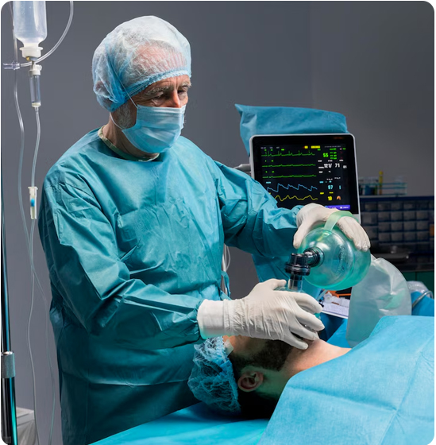

Cardio Thoracic And Vascular Surgery
Advanced Heart & Lung Care
Advanced Heart & Lung Care
Cardiothoracic surgery is a specialized field of medicine that focuses on the surgical treatment of organs within the thoracic cavity including the heart, lungs and other pleural structures.
Our team is committed to delivering state-of-the-art treatment options, comprehensive patient care and advanced surgical techniques to ensure the best possible recovery for patients.


Cardio Thoracic Surgeon

Cardiac Surgeon

Heart Specialist

Cardio Vascular Surgeon